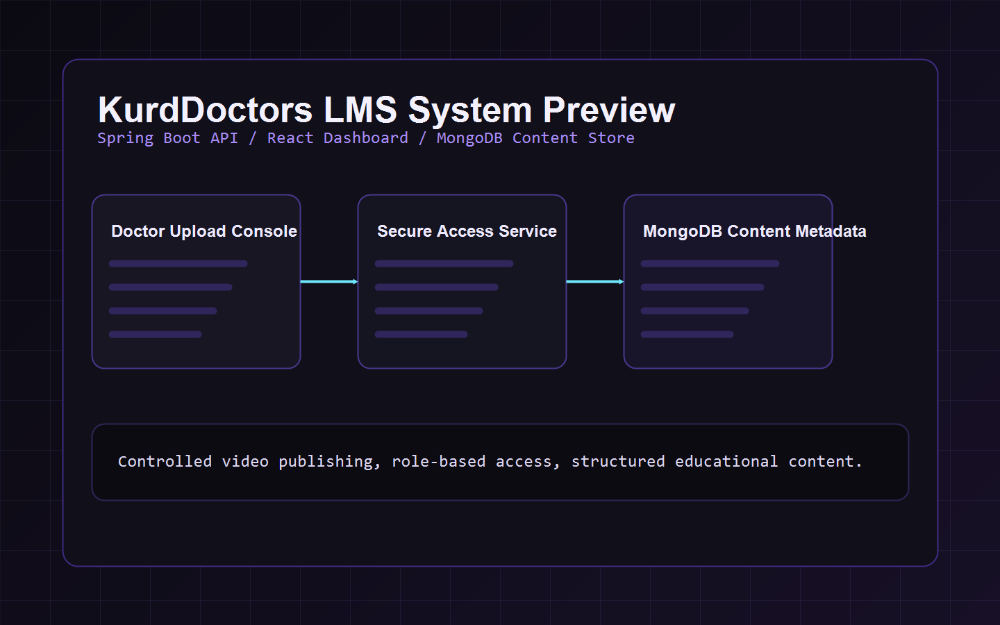

In progress / real-world system
Problem
Medical doctors do not have a secure platform to publish educational videos, leading to content leaks and lack of control.
Solution
A Learning Management System where doctors can securely upload, organize, and manage educational content.
Secure video management
Controlled access system
Structured educational content
Spring Boot
React
MongoDB

System previewFuture preview area for dashboard, course, and secure video screens.